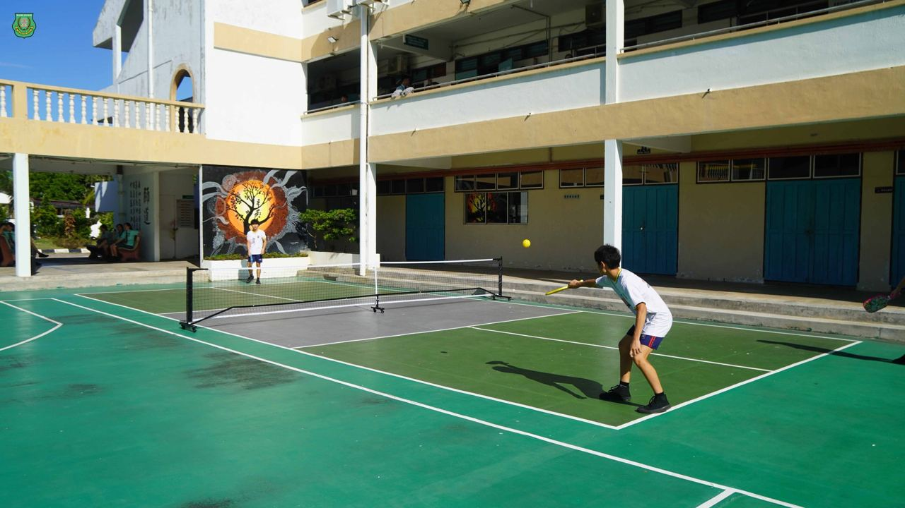
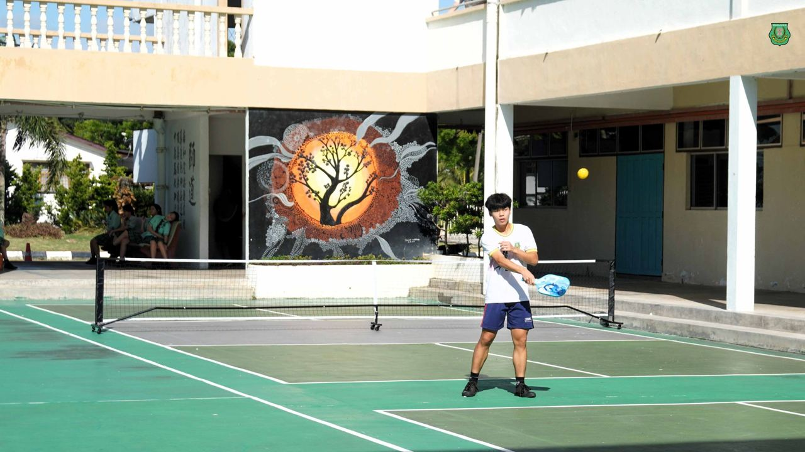
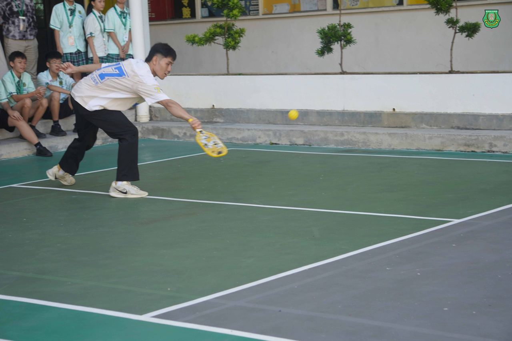
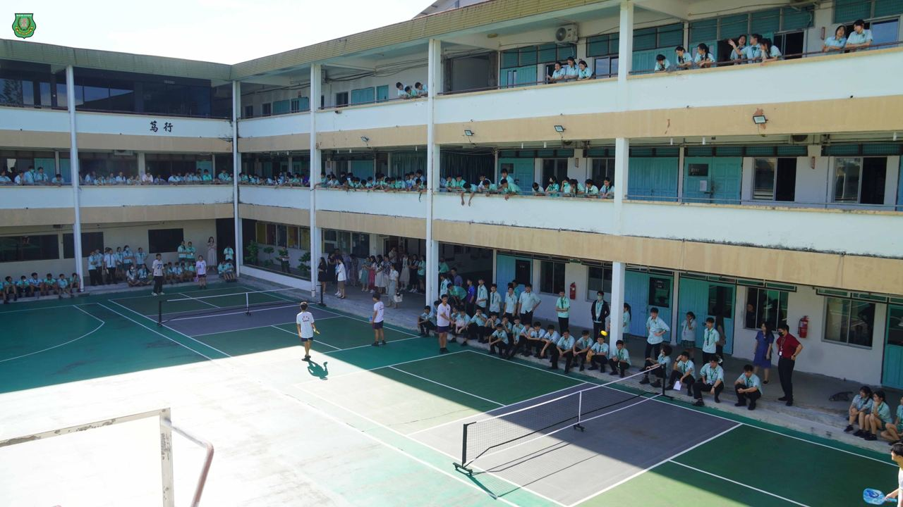
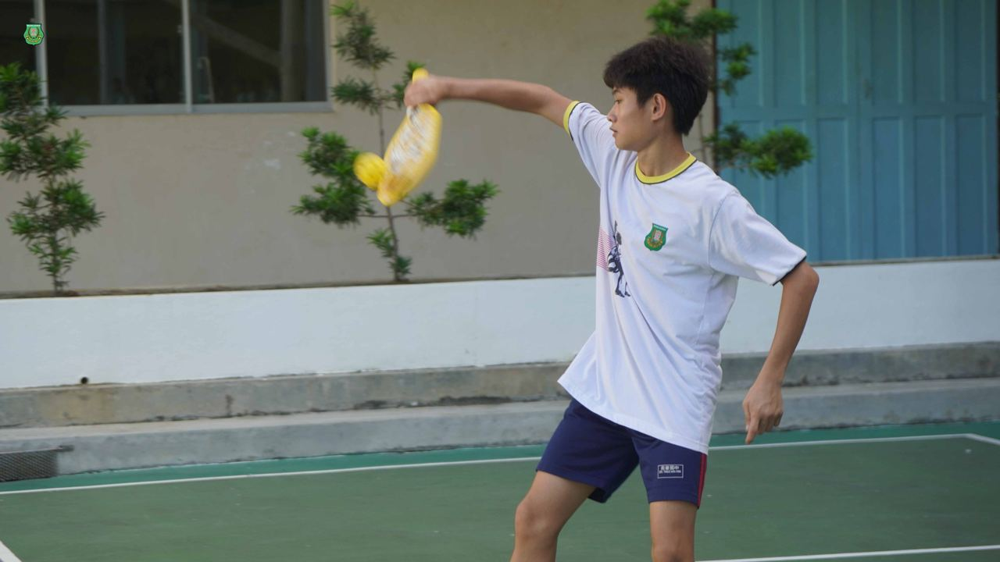
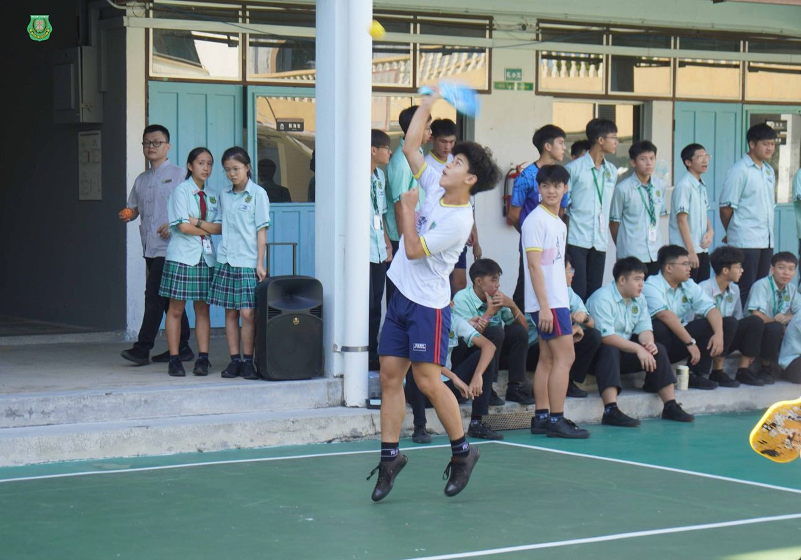
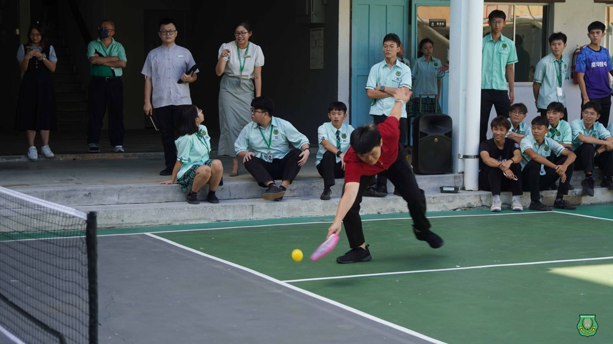
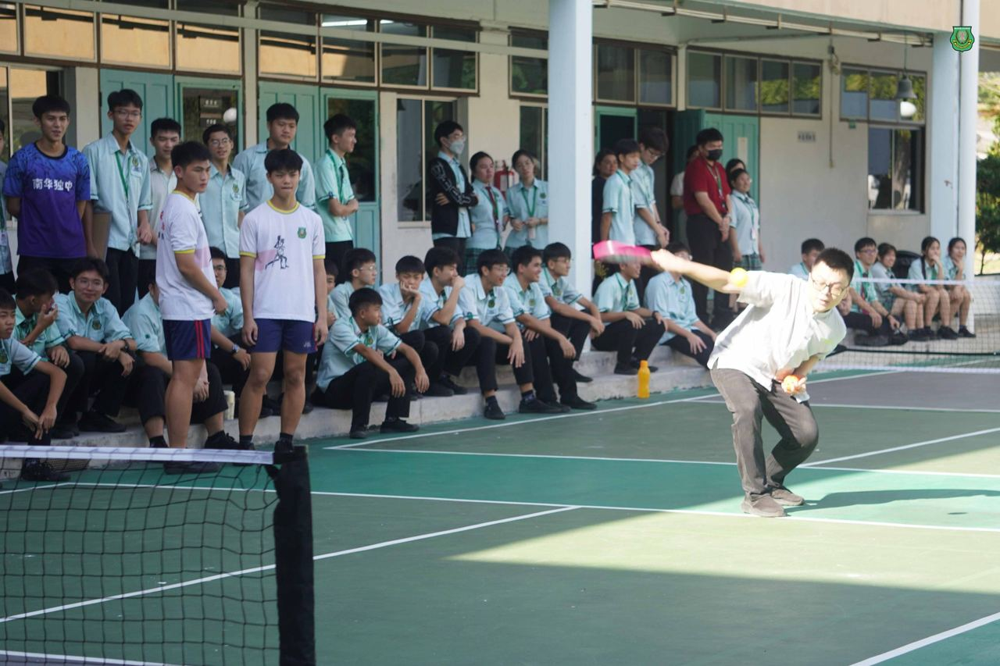

南华独中匹克球场开球礼
南华独中匹克球场开球礼
现场欢腾 深获师生欢迎
南华独中日前举行开球礼，庆祝新增设的四座匹克球球场正式启用，为校园体育设施再添新篇章。现场气氛热烈，师生们齐聚见证这一重要时刻。
当天，全校师生齐聚球场，热情观礼，共同见证学校体育发展的新里程碑。师生们纷纷拍照留念，现场洋溢着欢欣与期待的气氛。
校方秉持着重视运动教育的理念，并让更多学生系统学习，宣布匹克球将于今年起正式纳入初三体育正课内容之一。透过课堂教学与实际操作，学生将有机会系统深入掌握这项新兴运动，进一步丰富他们的体育技能版图，夯实身心发展的基础。
校长陈丽冰博士表示，运动不仅强健体魄，更是塑造坚韧心志的重要途径。她寄语学生：“学生应该向运动健将看齐，拥有健康的体魄，为塑造健全身心健康打造坚实的基底。天将降大任于斯人也，必先苦其心智，劳其筋骨，有了健全的身躯，就能全力以赴，应对任何困境。”
开球礼上，体育主任颜国政简要介绍了匹克球的基本规则。他鼓励学生们以开放的心态，积极接触与接受新型运动项目，强调学校不断完善硬体设备，正是为了让学生拥有更多元的运动体验与成长空间。
活动高潮时，不少教师也蠢蠢欲动，亲自下场挥拍体验匹克球的魅力。教师们在球场上灵活穿梭，笑声与喝彩声此起彼落，让这场开球礼充满活力与趣味。
匹克球融合了网球、羽毛球与乒乓球的元素，以其趣味性与亲和性迅速风靡全球。相信本校引进的这项新兴运动将会在校内掀起匹克球学习风潮。







